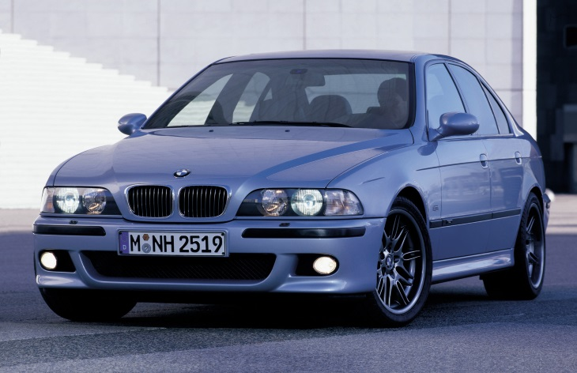

BMW M5 • 3 поколение (E39) • 1998–2003
Производство автомобилей BMW M5 третьего поколения серии E39, дебютировавших в 1998 году, перенесли с фабрики BMW M GmbH на основной конвейер в Диндольфинге. Машина получила новый 4,9-литровый двигатель V8 мощностью 400 л. с. и шестиступенчатую «механику» Getrag. До «сотни» такой M5 разгонялся за 5,3 секунды. Всего выпустили 20711 седанов (универсалов в производственной программе не было).
Всего выпустили 12245 машин второго поколения, включая 891 универсал • 1998–2003/1.jpg)
 • 1998–2003/2.jpg)
 • 1998–2003/3.jpg)
 • 1998–2003/4.jpg)
 • 1998–2003/5.jpg)
 • 1998–2003/6.jpg)
